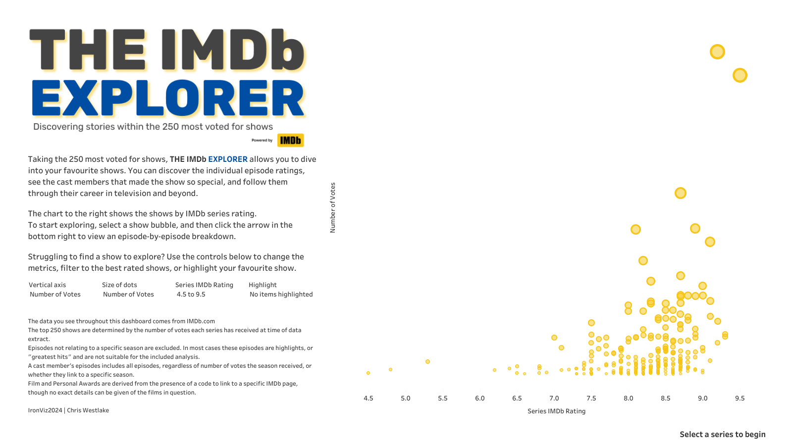

A Spotlight on Storytelling
Storytelling represents one third of the judging criteria for Tableau’s IronViz, and is the part that seems to cause the most confusion. It adds an additional dimension to the parts of data visualisation that come more naturally – those of analysis and design. It’s relatively easy to analyse data and display it in a well-designed manner. To find a story in the data and tell that story in a compelling way through charts relies on a somewhat different skill.
I have touched before in this series on the official Judging Criteria that Tableau released for the qualifier round of this year’s IronViz competition. As I had never fully understood what was being looked for in this section, I stuck close to the criteria in both my qualifier viz and the final. The criteria stipulates that a clear story must be told, that the story must flow through the visualisation in a way that guides consumers from question to insight, and that the storytelling captures and maintains interest throughout the entire viz among several other things. We’ll focus on how I achieved these three in this blog.

A different storytelling style
If you have been around in the Tableau world for any time at all, you will know that the format of IronViz fits into two rounds. The Global Qualifier Contest runs for about a month and is open to any participant globally who submits a dashboard in keeping with a theme selected by Tableau. From these entries, three finalists are selected to compete on stage at Tableau’s annual conference in front of about 7,000 attendees. In the final, contestants are given 20 minutes to build a dashboard from the same dataset, and then 3 minutes to present it to the audience and judges.
Storytelling points in the final come purely from this 3 minute presentation. This makes it a very different skill than what is needed in the feeder round. Instead of needing your train of thought to be clear to someone completely new to the dashboard without your presence to help them, in the final you can use words to tell the story, and demonstrate how the charts support that story. To me this seemed much easier, but how exactly did I incorporate a story into the IMDb Explorer? How did I tell that story to the thousands watching live in San Diego, and many more watching at home? As in the previous editions of this series, let’s take each section of the dashboard in turn and see how the story came to life.
Before launching into discussing the storytelling, let’s look at the finished product. Below is a recording of that 3 minute presentation from the Final itself.
Prior to being on stage here, the most people I had presented in front of was about 200 as a student performing in a high-school play over a decade ago. Since graduating in 2020, the largest audience I had presented to in person was about 50 people. Both these number are much, much lower than the 7,000 faces that stared back at me in San Diego. I knew that this was an important part of the competition, and also a part of it that I was likely to not do so well in without proper presentation. I worked with a presentation coach for a few weeks before the final, and thought I would share with you a couple of tips that I gained from the sessions I had with Mel Sherwood. The main work that we did was looking at how to construct a script that can keep people engaged. The TV show I focused on had to be well known and well loved to ensure that people would follow along with me. Even before that though, there was a technique I used to set the scene for it all.
“Hands up if you enjoyed watching TV when you were growing up… Well, I was the weird kid at school who didn’t have a TV at home.” This opening line had nothing to do with the dashboard or the data. But it had everything to do with making the presentation work. Getting the audience to raise their hands had two impacts. The first: they had actively participated in the presentation and therefore had some buy in to the whole thing. The second: I had made them actively participate. The power that I felt in achieving that was incredible. These people were listening to me and wanted to hear what I had to say. I was in control and the stage was entirely mine.
On to the dashboard itself.
Storytelling in the Scatter Plot

I started by highlighting the two outliers that meet your eye when you look at the default position of the chart. These shows weren’t important to my story, but they enabled me to show off some functionality – the animations. When I changed the vertical axis these two dots moved, and I had guaranteed people’s eyes would follow them simply because I had drawn attention to them. The next few clicks paved the way for what I really wanted to focus on – my favourite show but for a data driven reason. By making The Office stand out from the other shows, I used the visualisation to guide my consumers (the audience) from question to insight.
Storytelling in the Radial Chart

When the radial came onto the screen, people in the audience gasped. This was the exact reaction I wanted it to create. I’d captivated people’s interest with the first page through a question, and now through a well-designed chart I had their interest again. When talking about the radial, I didn’t mention any numbers. It was all about trends. It is easy to see what is good and what is bad. As Mel told me in my sessions with her, every word has to fight for its place, and that was a fight that the numbers just couldn’t win.
I explained the difference in colours of the dots on the radial chart, setting up an argument for the change in colour and then proving that argument true. After saying that “the red dots represent the episodes we remember the most”, I read out the names of some of these episodes. The reaction in the audience spoke for itself here. People remembered these episodes instantly and knew how they had made them feel when they watched them for the first time. Tapping into people’s emotions is a powerful tool. Using it well ensures people remain engaged.
I then called out the drop in ratings in the final two seasons. Why was this drop there? Asking a question of this helped me flow from this step of the story to the next. Because The Office is such a popular show, most people knew why the drop off was there. I didn’t need to convince them of anything. I only needed to use the data to evidence what they already thought.
Storytelling in the Cast Focus


When the cast list came up, I wasted no time at all. Steve Carell was the answer to the question, and most of the room knew it. A quick hover on his name showed it to everyone else. What people maybe didn’t know is what happened to Steve Carell next, and the possible reasons for his exit from the show. Because people loved the character of Michael Scott they had a deep interest in what stole him away from them. Again, it’s an emotive question that keeps people wanting to know more.
When looking at Steve Carell’s television career, two things stand out immediately. He features in more TV episodes during his Office years than any other year, and after this he dropped to next to nothing for the best part of a decade. Another question – why?
I’ve said before that the data I used in this final chart shouldn’t have been in there at all. But I’m very glad it was as it proved to be the ideal final step. Included in the supplied data was every award each actor has won or been nominated for, and I had managed to identify whether these were TV awards, Film awards, or Personal awards. Having identified the gap in episodes on the previous page, the gap in TV awards is immediately noticeable. What you see at the same time is the spike in Film awards. This section almost needed no explanation from me on stage. It was clear that after departing The Office, Steve Carell had gone on to feature in some successful films.
//
My presentation finished with me reverting back to the front page, telling the audience that they could do the same analysis with any show they wanted. People who hadn’t watched The Office weren’t excluded from the story because they were invited to write their own story. My story was engaging, it was clear, and, to round it all off, it was inclusive. I’d love to hear from you with any insights you’ve uncovered about your favourite shows using this dashboard - get in touch!
I hope in this there are some techniques that you can use in your next presentation, and that you can apply to your next dashboard. Make sure to check out the other blog posts in this series, focusing on the other sides of the Iron Viz triangle – analysis and design.
Take care // Chris